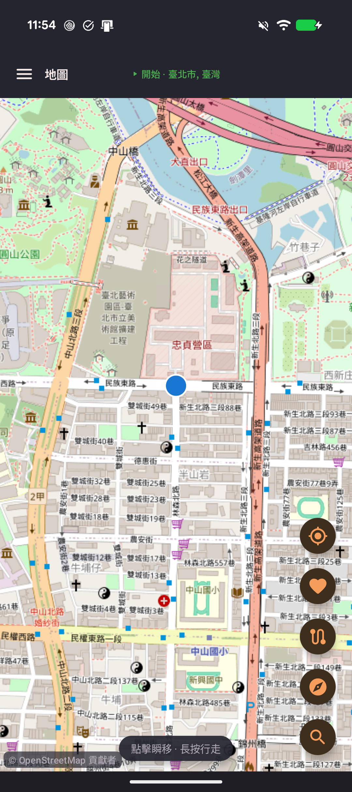
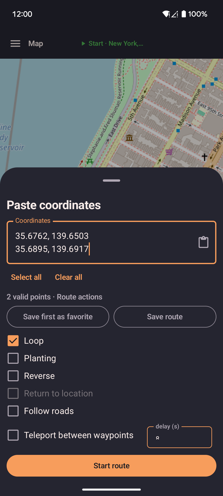
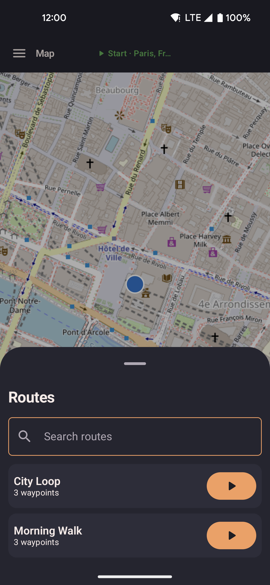
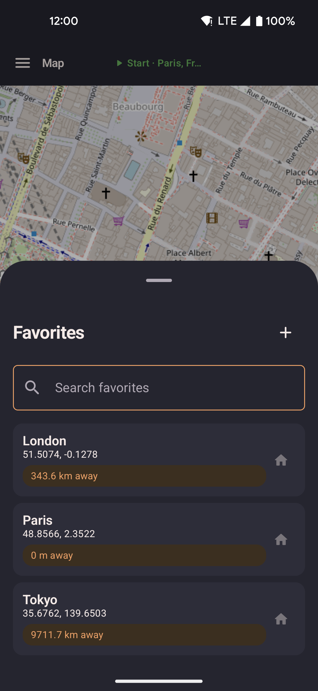
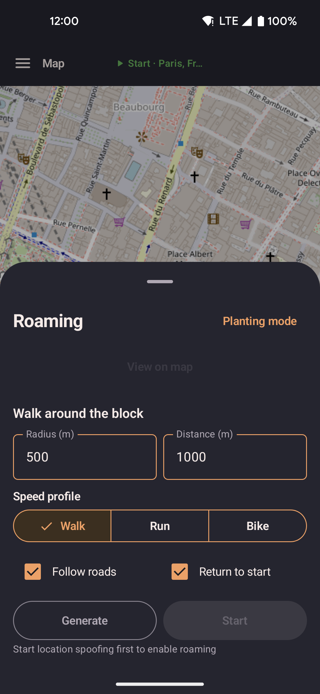
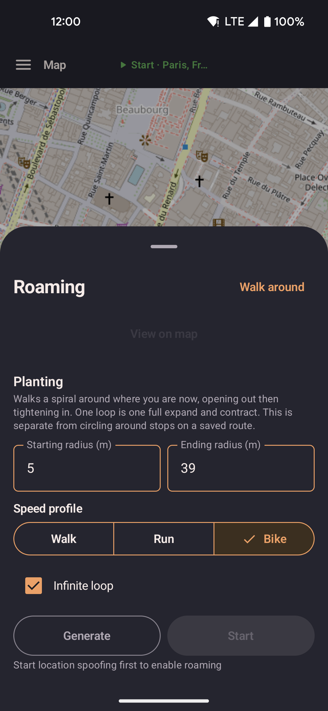

Map
The map is the main screen. A marker shows your current location and moves as you move. Tap the map to set your position. Open routes, favorites, and roaming from the buttons over the map.
Map images come from tile.openstreetmap.org, or from Amap (高德) if you choose it in Settings → Menus → Map source. The app stores areas you have seen on your device, so they still load offline. After a long jump, a wide view shows first and the details fill in after. A small credit for the map provider sits in the corner.

- If spoofing is on when you open the app, you land on the map. If it is off, you land on the Home screen. Home is always in the side menu.
- Long-press the map to open a sheet with "Walk here" or "Teleport here".
- With no remembered position, the map starts at your real location.
- Tap the start button to begin from the current map position.
- The walk, route, or roaming button turns grey while paused. Tap it to open the controls. Resume restores its running color.
- The map follows your marker as it moves. Drag the map to stop following. Tap the center button to follow again.
- The center button returns to your fake position when spoofing is on. When spoofing is off, it centers on your real location and does not change your saved fake position.
- Tap the search button to find a place by name.
- Tap the paste button to enter coordinates. Turn it on first in Settings → Menus → App Features.
Location search
Tap the search button (magnifying glass) and type a place name, address, or landmark. Results appear as you type. Pick one to place a marker and center the map there. See Settings → External services for what the search service receives.
- Recent searches are saved on your device and shown before you type.
- Picking a result does not move your location. Long-press the marker to walk or teleport there.
- Type coordinates, such as
35.6762, 139.6503or37°34'11.4"N 127°00'17.9"E, to jump to that point without a search.
Paste coordinates
The paste button (clipboard icon) is off by default. Turn it on in Settings → Menus → App Features. It shows on the map, on the floating widget, or both. Tap it to open a box where you paste or type one point or a list. Two formats work:
- Decimal degrees, such as
11.0127769, 79.48065. - Degrees, minutes, and seconds, such as
37°34'11.4"N 127°00'17.9"E.

- With one point, the sheet offers Teleport, Walk, and Walk via roads.
- With two or more points, the sheet offers route actions and Start route.
- Tap the clipboard icon in the box to paste. New text is added on a new line. It does not replace what is there.
- You can keep headings and notes in the text. The app ignores lines it does not recognize.
- The box grows to 10 lines, then scrolls. Select all and Clear all sit under it.
- Teleport works offline. Walk via roads needs an internet connection. If it fails, the app walks in a straight line.
- Save favorite keeps the first point. With a list, it reads Save first as favorite. The app asks for a name.
- Save route needs two or more points. The app asks for a name. A later paste never overwrites a saved route, even with the same name.
- With two or more points, these options appear: Loop, Planting, Reverse, Return to location, Follow roads, and Teleport between waypoints. They work as they do for a saved route. See Routes.
- Tap Start route to play the points without saving. The next pasted route replaces it. Use Save route to keep it. Moving the joystick pauses the route; tap Resume to continue. Pause or stop the route before starting roaming.
- If the text has no valid coordinates, nothing moves and the box says none were found.
Open a GPX file
Open a GPX file from Files, Downloads, Share, or a chat app to use this same box. The title reads Open GPX and the points are already filled in. Save route suggests the file name. If the file is not a valid GPX, a short message says so.
Tap to move
Long-press a point on the map to open a sheet. The options depend on what is happening:
| Action | What it does |
|---|---|
| Teleport here | Your position jumps to the point at once. Any running or paused route or roam ends first. Teleport works offline. If you paused spoofing, tap Start before you teleport. |
| Walk here | You walk to the point in a straight line at your current speed. |
| Walk here via roads | You walk along real roads at your current speed. If the roads cannot be loaded, you walk in a straight line instead. |
| Add next point | Shown only while you walk somewhere. It adds a stop to the walk. The first tap makes a chain: where you started, where you were going, and the new point. Later taps add more stops. If the walk follows roads, the new stretch does too. |
| Share this location | Opens the share menu with a link to the point. See Location Links. |
Walking via roads, road-following routes, and roaming load their paths from an online routing service. If the service is unreachable, the app uses a straight line for that stretch and movement continues.
While a saved route plays, the sheet shows other choices: Stop route and teleport, Stop route and walk here, and Finish route and walk here. The last one adds the point to the end of the route.
Teleport wait time
Some games punish impossible travel: a long jump followed by a quick second jump. Before you teleport, the app shows how long to wait after your last teleport. The wait grows with the distance of the jump. The message is advice only. Nothing is blocked.
- The map's long-press sheet, the favorites lists (app, map, and widget), the floating map, and the Group Sync follower screen show it. It reads "No wait needed" when the wait is over or you have not teleported yet.
- The clock starts at each teleport. Every teleport counts, from any of those places.
- Walking never starts or resets the clock.
| Jump distance | Suggested wait |
|---|---|
| Under 10 m | None |
| 10 m | 3 seconds |
| 100 m | 15 seconds |
| 500 m | 30 seconds |
| 1 km | 2 minutes |
| 5 km | 6 minutes |
| 10 km | 11 minutes |
| 25 km | 14 minutes |
| 30 km | 22 minutes |
| 65 km | 25 minutes |
| 81 km | 35 minutes |
| 100 km | 45 minutes |
| 250 km | 1 hour |
| 500 km | 1 hour 15 minutes |
| 750 km | 1 hour 30 minutes |
| 1,000 km or more | 2 hours |
Each row starts at the distance shown and applies until the next row. Distance is a straight line from your current fake position to the target.
Routes sheet
Start a saved route without leaving the map.

- Tap a route to preview its path.
- Start, loop, or reverse the route. See Replay options.
- While a route plays, your marker moves along the path. Previous stop and Next stop skip one stop at a time.
- A count such as
3/12at the bottom of the right-hand buttons shows your current stop.
Favorites sheet
Go to a favorite without leaving the map.

- Tap a favorite to see three options: Set location (teleport, which also ends a running or paused route or roam), Walk to location (straight line), and Walk via roads.
- Type in the search box to filter favorites by name or area. Closing the sheet clears the search.
- Each favorite shows its name and its straight-line distance from you. The real travel distance by road is longer.
- Tap Save current location to add where you are now as a favorite.
Roaming sheet
Roaming moves you around automatically. There are two modes. Only one can run at a time.

- Walk around the block walks between random spots within a radius.
- Planting walks a spiral around your position, opens out, then tightens again. That is one loop.
- Radius, distance, speed, and loop defaults are in Settings → Roaming.
- Generate shows the path on the map before you start. Roaming keeps running with the screen off. Once roaming starts, changing speed in the app or on the widget overrides your choice.
- A playing route takes priority. Start roaming is disabled until you pause or stop the route. If you pause, roaming can start and ends the paused route.

- The button at the top right of the sheet switches between the two modes. Planting shows its own starting radius, ending radius, speed, and loop count.
Wobble radius circle
Turn on Debug stats in Settings. The map then draws a faint circle around your marker. The circle shows how far the random wobble can move you. It helps you tune the Idle radius and Moving radius settings.